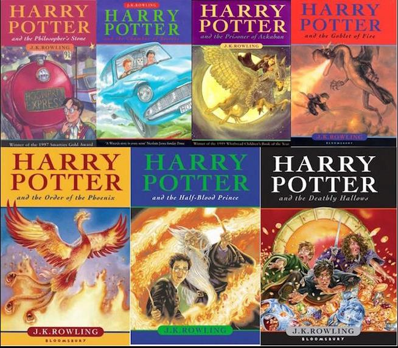
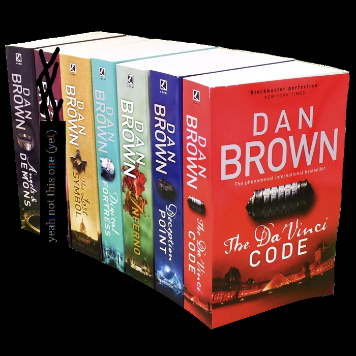

Books I've Read
So I've been reading for a while. Reading has been a pastime since I was eight.
Whether it was due to having nothing else to do, or taking interest in a particular author,
I have spent much time reading every summer. Mostly fiction, with some non-fiction that I have come across.
I present you with all the books I've read while attending secondary school.
I present you with all the books I've read while attending secondary school.
Gulliver's Travels - Jonathan Swift
I tried reading this book when I was twelve...
The book is written in Early Modern English. Something I should've known before wasting my time trying to decrypt it with my then-inadequate English skills.
I remember nothing in it, and I hardly understood anything when I read it. I do recall, however, reading it side by side with a dictionary, also poorly equipped for the book's vocabulary. When I reached out to my English teacher, she was astonished at my selection of this book, and recommended that I pick up a more contemporary text instead. Dropped it 40 pages pages in.
I tried reading this book when I was twelve...
The book is written in Early Modern English. Something I should've known before wasting my time trying to decrypt it with my then-inadequate English skills.
I remember nothing in it, and I hardly understood anything when I read it. I do recall, however, reading it side by side with a dictionary, also poorly equipped for the book's vocabulary. When I reached out to my English teacher, she was astonished at my selection of this book, and recommended that I pick up a more contemporary text instead. Dropped it 40 pages pages in.

Harry Potter Saga - J. K. Rowling
Overwhelmed my my previous book, I decided to pick up something more mainstream. When browsing the library aisle at my school, the Harry Potter titles were the first to come to my attention. I haven't watched the movies yet at that point, so the series was a mystery to me. Having plenty of spare time and little else to do, I picked up the Sorcerer's Stone. What could go wrong?
I have burned through them in no time at all. The first two books I must have finished in less than two months. The rest of the I had to wait for, in great frustration. When I got them, I took them everywhere with me and took every opportunity to read them. Of course, they don't need my endorsement, but they did not fail to impress.
Overwhelmed my my previous book, I decided to pick up something more mainstream. When browsing the library aisle at my school, the Harry Potter titles were the first to come to my attention. I haven't watched the movies yet at that point, so the series was a mystery to me. Having plenty of spare time and little else to do, I picked up the Sorcerer's Stone. What could go wrong?
I have burned through them in no time at all. The first two books I must have finished in less than two months. The rest of the I had to wait for, in great frustration. When I got them, I took them everywhere with me and took every opportunity to read them. Of course, they don't need my endorsement, but they did not fail to impress.

Many Dan Brown books
In retrospect, it was no surprise to me that I would pick up these books.
Through the compelled reading in English class (which I am not counting here), I have acquainted myself to the genres of crime and mystery, and figured I would enjoy them. Having finally finished the Harry Potter series, I got my hands on these gems. Here we go again.
They are as good as they are epic in their themes and scope. Following Robert Langdon - the main character in a few of these novels - in his adventures, was not a big jump from Harry Potter. The themes, settings and characters, however, were in a completely different league. I realised that I wasn't reading fairy tales anymore.
The tone in these books was brought about by my taste in media maturing to some degree, and moving forward I would attempt to read more serious stuff. Only to rebound back into fantasy later on. Now I'm stuck with two Dostoyevsky and two Tolstoy novels that I can't muster the willpower to finish. The time will come when I will attempt to finish the Karamazov Brothers for a third time.
In retrospect, it was no surprise to me that I would pick up these books.
Through the compelled reading in English class (which I am not counting here), I have acquainted myself to the genres of crime and mystery, and figured I would enjoy them. Having finally finished the Harry Potter series, I got my hands on these gems. Here we go again.
They are as good as they are epic in their themes and scope. Following Robert Langdon - the main character in a few of these novels - in his adventures, was not a big jump from Harry Potter. The themes, settings and characters, however, were in a completely different league. I realised that I wasn't reading fairy tales anymore.
The tone in these books was brought about by my taste in media maturing to some degree, and moving forward I would attempt to read more serious stuff. Only to rebound back into fantasy later on. Now I'm stuck with two Dostoyevsky and two Tolstoy novels that I can't muster the willpower to finish. The time will come when I will attempt to finish the Karamazov Brothers for a third time.

OPUS DEI - An Investigation Into the Secret Society Struggling for Power Within the Roman Catholic Church by Michael Walsh (Translated into Romanian)
After reading the Da Vinci Code by Dan Brown, I became interested in secret societies and the Church. One sunny morning, I went to my local book store browsing for such material, and found it. A book on the exact society named in the Da Vinci Code. Iw was one of the fastest purchases I ever did.
It was my first non-fiction book at that point, and it turned out to be a very tough read. The story of the founder and his vision were quite interesting, and the political implications and reactions of the organisation were even more interesting. However, many of the explanations surrounding religious structures and operations went over my head. Definitely a niche book, but I enjoyed it for sure.
After reading the Da Vinci Code by Dan Brown, I became interested in secret societies and the Church. One sunny morning, I went to my local book store browsing for such material, and found it. A book on the exact society named in the Da Vinci Code. Iw was one of the fastest purchases I ever did.
It was my first non-fiction book at that point, and it turned out to be a very tough read. The story of the founder and his vision were quite interesting, and the political implications and reactions of the organisation were even more interesting. However, many of the explanations surrounding religious structures and operations went over my head. Definitely a niche book, but I enjoyed it for sure.